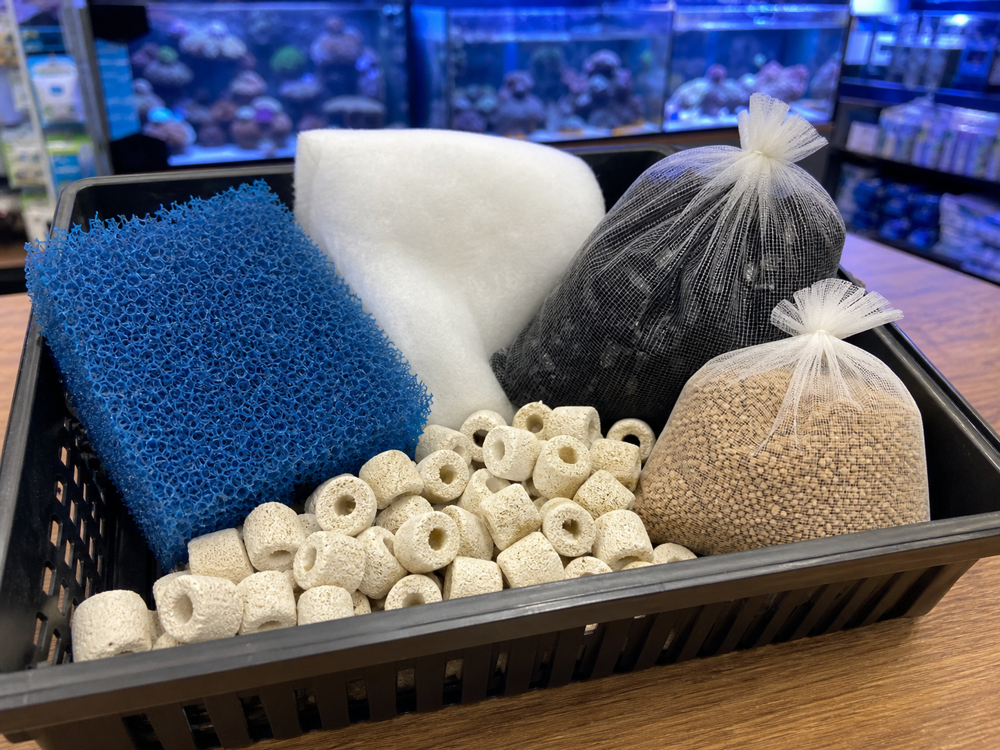

Sponges, pads, floss
These catch particles before they break down or clog deeper media.
- Rinse reusable sponge in tank water
- Replace fine floss when loaded
- Clean before flow drops badly
 The Hidden ReefAquariums · Fish · Coral · Ponds
The Hidden ReefAquariums · Fish · Coral · Ponds
Sponges, floss, ceramic rings, carbon, and phosphate removers all sound like “filter stuff,” but they solve different problems. The safest filters use media in the right order and avoid replacing all bacteria-bearing media at once.

A filter can hold several media types, but adding more is not always better. Pick media for a clear reason.
These catch particles before they break down or clog deeper media.
This is home base for bacteria that process ammonia and nitrite.
Use chemical media for specific polishing, odor, medication removal, or targeted water cleanup.
Specialty media should solve a known problem, not compensate for unknown water quality.
Swap dirty floss, pads, or carbon when they are spent, but keep seasoned biological media wet and in use. Replacing every layer at once can remove too much helpful bacteria.
The same cleaning rule should not apply to every layer of the filter.
Reduced flow usually means the first mechanical layer is loaded with debris.
Biological media does not need to look new. It needs water flow and oxygen.
Carbon, resins, and phosphate media have a purpose and a useful lifespan.